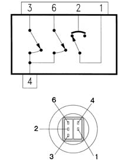

5040BA CHECK ON OPERATION OF 4 STAGE PRESSURE SWITCH
- Path
- Test > 50 AUXILIARY UNITS > 5040 AIR CONDITIONING CASING AND COMPONENTS > 5040B system safety check devices > 5040BA CHECK ON OPERATION OF 4 STAGE PRESSURE SWITCH
- Kind
- test / check procedure
- Applies to
- all engines; all production periods
- Interactive page
- https://sloeber94.github.io/elrnDB-a147/en/#/3026067
Applies to: all engines; all production periods
Wiring diagrams and pins

Pin - signal 1, 1st and 2nd stage 2, 1st and 4th stage 3, 2nd stage 4, earth 5, N.C. 6, 3rd level
Check 1st level (approx. 2.5 bar):
- Disconnect the pressure switch from its pipeand check for breaks in the circuit between pins 1 and 2.
- Reconnect the pressure switch to its pipe: the contact between pins 1 and 2 closes.
- Reconnect the electrical connection of the pressure switch and switch on the system by pressing the A/C button on the air conditioner control panel.
- Wait a few minutes. At the same time make sure that the compressor switches on normally.
 | Measurement | Value | |
|---|---|---|---|
- | 1st˚ setting (bar) | contact closes | Max 3.5 |
contact opening | 2.45 ± 0.35 | ||
Check 2nd stage (approx. 15 bar):
- Operate the system with the car at a standstill. Wait a few more minutes: the contact between pins 3 and 4 closes. At the same time make sure that the fan comes on at the first speed.
| Measurement | Value | |
|---|---|---|---|
- | 2nd˚ setting (bar) | contact closes | 15 ± 1 |
contact opening | 11 ± 2 | ||
Check 3rd level (approx. 20 bar):
- Again operate the system with the car at a standstill. Wait a few minutes: the contact between pins 6 and 4 closes. At the same time make sure that the fan changes from the first to the second speed.
| Measurement | Value | |
|---|---|---|---|
- | 3rd˚ level setting (bar) | contact closes | 20 ± 1.2 |
contact opening | 1.6 ± 2.2 | ||
Check 4th stage (approx. 28 bar):
- It is advisable not to allow the pressure of the circuit to increase to that value, which is too close to the safety limits. The calibration of this level cannot therefore be checked on the car. However, if the system were to reach this value, the contact between pins 1 and 2 would close.
| Measurement | Value | |
|---|---|---|---|
- | 4th˚ setting (bar) | contact closes | 22 ± 4 |
contact opening | 28 ± 2 | ||